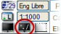

| |
|
DETAYLI GÖSTERİM VE EKRAN MODU
|
Detaylı Gösterim ve Basit Gösterim Modu Her grafik nesne, ekranda kaydırma veya yakınlaştırma gibi sık yapılan eylemlerin neden olduğu yeniden çizimlerin mümkün olduğunca hızlı olması amacıyla basit bir şekilde temsil edilebilir. Bu şekilde, kullanıcının çok büyük çizimlerle (yüzlerce MB) çalışırken yaşadığı "yavaşlık" hissi büyük ölçüde önlenir ve programla çalışmak çok daha konforlu hale gelir. Bir moddan diğerine geçiş, resimde vurgulanan buton ile yapılır ve çizim üzerinde anında etki gösterir. Butonla ilişkili simge olduğunda, Detaylı Gösterim modu etkindir; eğer ise, o zaman aktif mod Basit Gösterim'dir. Basit Gösterim modunda, çizgiler çok basit bir şekilde (eğri yumuşatmaları veya kesikli stiller olmadan), semboller (basit artı işaretleri) ve metinler (küçük dikdörtgenler) gibi temsil edilir. Programı kullanırken bunu her zaman akılda tutmak gerekir, çünkü bazı eylemlerden sonra program otomatik olarak Basit Gösterim moduna geçebilir.
Çizim dosyasını başka bir formata dışa aktarırken, ISTRAM®/ISPOL® her iki modda da çıktı alma imkanı sunar. Ekran Modu ve Yazdırma Modu ISTRAM®/ISPOL®, EDM'yi görüntülemek için iki farklı yola sahiptir:
|